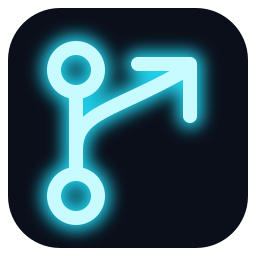
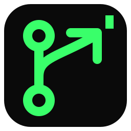
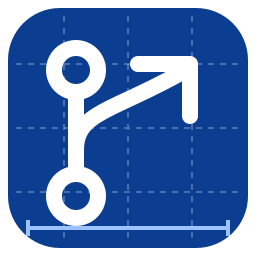
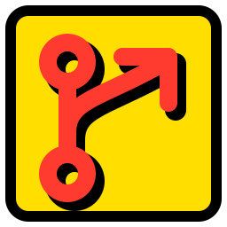
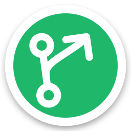
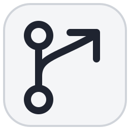
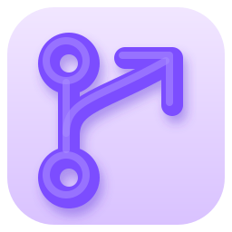

Neon: a git branch that leaves the trunk as an arrow to the remote, glowing cyan on a dark tile

Terminal: a git branch that leaves the trunk as an arrow to the remote, green glyph on black with a block cursor

Blueprint: a git branch that leaves the trunk as an arrow to the remote, white lines on blueprint blue with a dashed grid

Flat: a git branch that leaves the trunk as an arrow to the remote, white glyph on a solid orange tile
Gradient: a git branch that leaves the trunk as an arrow to the remote, white glyph on a violet to pink tile, as on iOS
Brutalist: a git branch that leaves the trunk as an arrow to the remote, red glyph with a hard black shadow on yellow

Sticker: a git branch that leaves the trunk as an arrow to the remote, a tilted green die cut sticker with a shadow

Line: a git branch that leaves the trunk as an arrow to the remote, one dark stroke weight on a light tile

Circuit: a git branch that leaves the trunk as an arrow to the remote, gold traces and pads on PCB green
Clay: a git branch that leaves the trunk as an arrow to the remote, a soft purple glyph raised on a lilac tile
